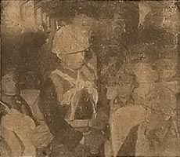

|
j
a v a s c r i p t |
December 5, 1944

Kaoru Airborne Squad last
flight—"On Sure-Kill Mission" Tribune: "Japanese Reinforce Leyte Troops.... Convoy carrying war supplies arrives without casualties" after "braving incessant fire from American long-range artillery" and attacks from PT boats. The box score, now including PT boats, reached 447 vessels! "Japs using new type planes" — Domei, December 2, from a Philippine Base. "The Japanese Navy's new fighter and bomber aircraft [Ginga and Suisei] will easily wipe out any American task force and ultimate Japanese victory in the Greater East Asia War is now absolutely assured." "Aquino appeals to all Filipinos to Unite for National Survival" in his Kalibapi Day speech — the mildest he has ever made. "Firemen Face Robbery Charge." Figueras told Guinto that he was missing a few items from his house. An investigation revealed that a flannel blanket, woolen sweater, a bottle of whiskey and a pair of wooden shoes (probably bakya) were in the possession of five firemen. Other firemen were found with Figueras' shoes. Their excuse was that these were gifts from the Figueras children, and they used the shoes to protect their feet while fighting the fire. All are now in jail. Our House: Today's the day of our ousting, but of course, Oky didn't show up. Early in the morning I had a twenty-minute meeting with Takashima. I asked for an audience with Ito, but made it so he would know everything and have no need of seeing us, so a respite is in order unless Ito sends for us. LEYTE: Mac says both sides lost a destroyer off Ormoc, and an additional Japanese destroyer was damaged. I believe there was an actual naval gun battle in Ormoc Bay! One of two Catalinas picked up 56 U.S. survivors and had to taxi for three miles before it could lift off! Bololo La'O returned from Baguio and gave me the real dope on conditions there. Eggs are at P7.50 each and rice is P7,000 a sack. With the Japanese coming and going all the time, he doubts if there is much house stealing, but they do take a share of any food they find at every checkpoint. Placido Adad also arrived from Baguio to buy insulin. The truck kept breaking down; he finally reached Manila by carretela. He said it is impossible to bring rice or corn into Manila. "Even the tires are inspected." |
|
|
|
|